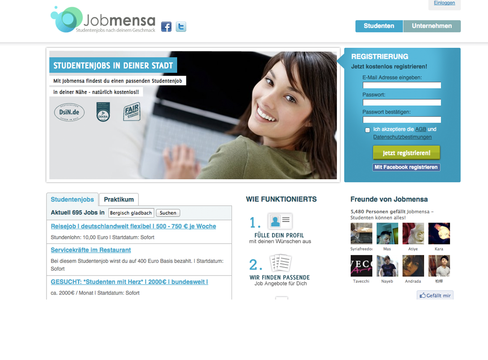
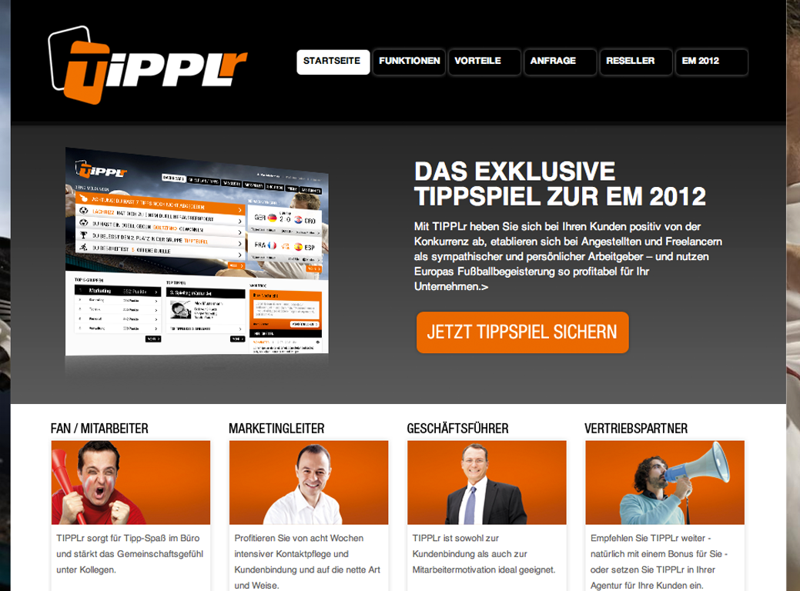
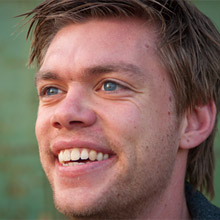
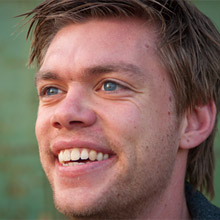

2008 Gründung der Bumann, Kus, Schneider GbR noch während des Studiums
Erste Kundenprojekte
- Zilino
- Tweetranking
Oktober 2010 Umwandlung in die Railslove GmbH
- Neuer Gesellschafter: Lars Brillert
- Mehr Mitabeiter, neue Projekte ;)
März 2012
- 16 feste Mitarbeiter
- 4 Freiberufler
- ca. 50 realisierte Projekte (Kundenprojekte und Eigenentwicklungen)
empty
Das Unternehmen
Was machen wir
- Ruby on Rails Beratung und Entwicklung
- Neu- und Weiterentwicklung von Webplattformen
- Entwicklung, Betrieb und Vermarktung eigener Webservices
- SaaS
- Joint Venture mit anderen Unternehmen
- Schulungen im Bereich Webentwicklung
- Idee stammt aus dem Fachkräftemangel in unserem Bereich
- Railslove University
- Gründer von Coworking Cologne und Betreiber des Coworking Spaces “Gasmotorenfabrik Köln e.V.”
- Für Startups, Freelancer & verscheidene User Groups
- Arbeit, Kreativität und Spaß an einem Ort
Unsere Ziele
Wir möchten europaweit als "die" kölner Entwicklungsagentur wahrgenommen werden.
Wir wollen durch Qualität, Flexibilität, Dynamik und Kreativität überzeugen. Startupförderung durch Bootstrappen von Projekten oder pushen von guten Ideen sind uns sehr wichtig.
Das alles natürlich mit kölschem Humor ;-)
Ausgewählte Kundenprojekte


Kunden aus dem Rheinland



Eigene Projekte

Tipplr
- „Das nächste Spiel ist immer das Nächste.“ - Matthias Sammer
- Und wir machen mit!
- B2B Tippspiel als Kundenbindungs- oder Marketingsinstrument
- Zur WM 2010 schon erfolgreich mehrere Tipprunden gelaunched
- Features wie: eigenes Customizing, Preise auf Plätze, Rankings, "Zweikampf", uvm.
- In Zusammenarbeit mit HauptwegeNebenwege GmbH aus Köln
- Mehr Informationen
- http://Tipplr.de
- Broschüre und Slides

Salesking
- SaaS Plattform für Prozesse rund um das Rechnungswesen
- Gründer: Georg Leciejewski
- Erstes Investment von Railslove
- Rechnungserstellungssoftware für diverse Zielgruppen
- Freelancer
- B2B
- Kunden aus NRW
- Sevenload
- Textprovider

Dealbase
- Initial ein Kundenprojekt für eVenture Capital Partners aus Hamburg
- Strategischer Partner
- Eins der ersten Projekte
- http://dealbaseapp.com
- Einfache SaaS zur Verwaltung von Deals "jeglicher Art"
- Für Startups, Venture Capitalists, Organisationen, etc.
- Hilft Unternehmen beim Dealflow Managment
- Customizable
- Smarte Software - keine "Eierlegende Wollmilchsau"
- Aktuell - heisse Entwicklungsphase
- Überarbeitung des UI's
- Mandantenfähigkeit
- E-Mail und Dropboxintegration
Was wir noch so verrücktes machen
- Kölsch-Deckel
- Der "immer dabei" Bierdeckel als iPhone app
- Hackerspursuit/Nerd Pursuit
- Echtzeit Wissenspiel als Joint Venture Projekt mit 9elements
Railslove...
...das sind 20 kreative Köpfe die sich täglich darüber den Kopf zerbrechen wie man die Welt verbessern kann.
Schulungen
Railslove University


 
Das Problem
- Entwicklermangel auf dem Fachmarkt
- Förderung von Studierenden
Die Ziele
- Nachwuchsförderung
- Wissensaustausch
- Ausschöpfung des wirtschaftlichen Potentials
Zielgruppe
- Freelancer (Schulungen im Coworking Space)
- Unternehmen (Inhouseschulungen ab einer gewissen Anzahl an Teilnehmern)
- Studenten
2012 Stärkung des Austausches zwischen
- Unternehmen (vor allem in NRW)
- Öffentlichen Institutionen (Uni, FH, VHS, ...)

Was tun wir für Köln und Umgebung?
Coworking, Events & User Groups
Gasmotorenfabrik Köln e.V.
- Mitgründer und Betreiber des Coworking Space Gasmotorenfabrik Köln e.V.
Events im Coworking Space
- Railscamp
- Coworking Day
- Nodecamp
User Groups & Workshops
- Cologne.js - JavaScript User Group
- Cologne.rb - Ruby User Group
- Kanban User Group
- DevHouseFriday Chillout (in verschiedenen Unternehmen)
- Drupal User Group
- Closure User Group
- CampusKöln Trainer Workshops
- Diverse Workshops in Zusammenarbeit mit der Ding Fabrik
- Webmontag
Wenn Mediencluster NRW sagt
„Unser Auftrag lautet, Wachstum und Innovation im Medienland NRW zu fördern. Die digitale Zukunft der Medien gestalten – gemeinsam stark!“
Dann sagt Railslove
Da simmer dabei!
Infos
R❤ Headquarters
Railslove GmbH, Deutz-Mülheimer Str. 129, 51063 Köln
team@railslove.com